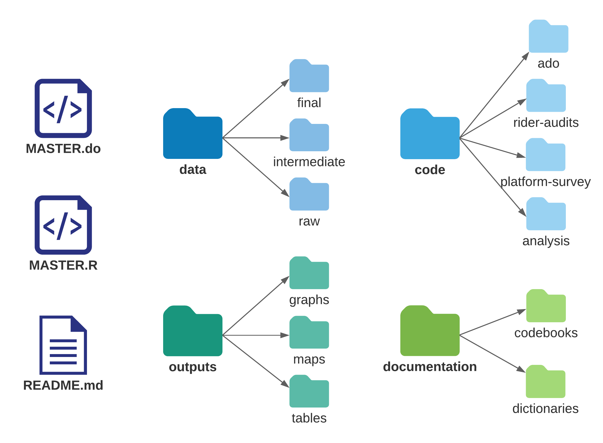
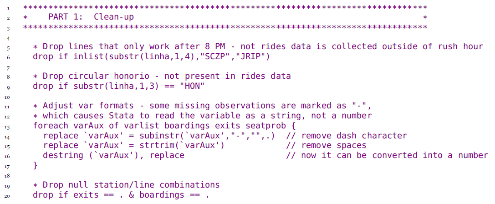
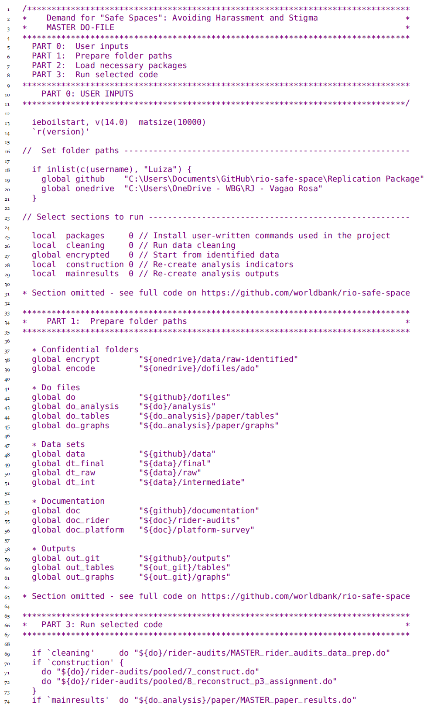

Chapter 2 Setting the stage for effective and efficient collaboration
In order to do effective data work in a team environment, you need to structure your workflow in advance. Preparation for collaborative data work begins long before you acquire any data, and involves planning both software tools and collaboration platforms for your team. This means knowing what types of data you’ll acquire, whether the data will require special handling due to size or privacy considerations, which datasets and outputs you will need at the end of the process, and how all data files and versions will stay organized throughout. It’s important to plan data workflows in advance because changing software or protocols halfway through a project is costly and time-consuming. Seemingly small decisions such as file-sharing services, folder structures, and filenames can be extremely painful to alter down the line in any project.
This chapter will guide you in setting up an effective environment for collaborative data work, structuring your data work to be well-organized and clearly documented, and setting up processes to handle confidential data securely. The first section outlines how to set up your working environment to effectively collaborate on technical tasks with others, and how to document tasks and decisions. The second section discusses how to organize your code and data so that others will be able to understand and interact with it easily. The third section provides guidelines for ensuring privacy and security when working with confidential data.
Summary: Setting the stage for effective and efficient collaboration Summary
The technical environment for your data work needs to be established at the start of a research project. Agreeing with the team on software choices, standard code and data structure, and clear data security protocols will prepare you to successfully, safely, and efficiently implement technical tasks throughout the project lifecycle. Consider:
1. Technical collaboration environment. No matter the hardware and software your team plans to use, you should ensure now that it is standardized or interoperable across the team. This includes:
- Secure all physical computing hardware through encryption and password-protection. If specialized or more powerful hardware is required, initiate access requests, purchase orders, or other processes now
- Agree on tools for collaboration and documentation, such that key conversations and decisions are archived and organized outside of instant-message and email conversation
- Decide the programming languages and environments the team will use. Take time to set up a comfortable and modern digital work environment
2. Organization of code and data. The team should agree on where and how code files and databases will be stored, down to the level of the folder structure. This involves setting up:
- A standardized and scalable folder structure so all documents have an unambiguous location, and the location and naming of files describes their purpose and function and is intuitive to all team members
- A backup and version control system appropriate for each file type, to ensure information cannot be lost and that all team members understand how to interoperate and collaborate
- Master script files that will structure and execute the code base of the
3. Information security measures and ethical frameworks. These include:
- Formally request and obtain approval from legal entities governing research in all relevant jurisdictions
- Understand how to respect the rights and dignity of research subjects and plan for how to establish informed consent from individuals or groups participating in the research
- Adopt standardized digital security practices including proper encryption of all confidential information, at rest and in transit, both among your team and with external partners
Takeaways
TTLs/PIs will:
- Support the acquisition and maintenance of required computing hardware and software, liaising with procurement, information security and information technology teams as necessary
- Make final decisions regarding code languages and environments
- Discuss and agree upon an appropriate project-wide digital organization strategy
- Institute and communicate best practices in accordance with legal, ethical, and security obligations
RAs will:
- Communicate technical needs clearly with TTLs/PIs and relevant service providers
- Consistently implement digital organization strategy and flag issues with task management, documentation, or materials storage if they arise
- Support project compliance with ethical, legal, and security obligations and flag concerns to TTLs/PIs
Key Resources
- DIME Research Ethics Standards: Pillar 1 of the DIME Research Standards https://github.com/worldbank/dime-standards
- DIME GitHub Resources: https://github.com/worldbank/dime-github-trainings
- DIME Data Security Standards: Pillar 4 of the DIME Research Standards https://github.com/worldbank/dime-standards
- DIME Data Publication Standards: Pillar 5 of the DIME Research Standards https://github.com/worldbank/dime-standards
Preparing a collaborative work environment
This section introduces core concepts and tools for organizing data work in an efficient, collaborative and reproducible manner. Some of these skills may seem elementary, but thinking about simple things from a workflow perspective can help you make marginal improvements every day you work; those add up to substantial gains over the course of multiple years and projects. Together, these processes form a collaborative workflow that will greatly accelerate your team’s ability to get tasks done on all your projects.
Teams often develop workflows in an ad hoc fashion, solving new challenges as they arise. Adaptation is good, of course. But it is important to recognize that there are a number of tasks that exist in common for every project, and it is more efficient to agree on the corresponding workflows in advance. For example, every project requires research documentation, organized file naming, directory organization, coding standards, version control, and code review. These tasks are common to almost every project, and their solutions translate well between projects. Therefore, there are large efficiency gains to thinking in advance about the best way to do these tasks, instead of throwing together a solution when the task arises. This section outlines the main points to discuss within the team, and suggests best practice solutions for these tasks.
Demand for Safe Spaces Case Study: Preparing a Collaborative Work Environment
Here are a few highlights of how the Demand for Safe Spaces team chose to organize their work environment for effective collaboration:
- The data work for the project was done through a private GitHub repository housed in the World Bank organization account.
- GitHub issues were used to document research decisions and to provide feedback. Even the PIs for the study, who did not directly participate in coding, used Github issues to review code and outputs and to create a record of broader discussions.
- Stata was adopted as the primary software for data analysis, as that is the software all team members had in common at the start of the project. At a later stage of the project, R code was developed specifically to create maps. The R portion of the code was developed independently, as it used different datasets and created separate outputs. The team used two separate master scripts, one for the Stata code base and one for the R code.
- The team members shared a synchronized folder (using Dropbox), which included the de-identified data and project documentation such as survey instruments and enumerator training manuals.
Setting up your computer
First things first: almost all your data work will be done on your computer, so make sure it’s set up for success. The operating system should be fully updated, it should be in good working order, and you should have a password-protected login. However, password-protection is not sufficient if your computer stores data that is not public. You would need to use encryption for sufficient protection, which will be covered later in this chapter. Make sure your computer is backed up to prevent information loss. Follow the 3-2-1 rule: maintain 3 copies of all original or irreplaceable data, on at least 2 different hardware devices you have access to, with 1 offsite storage method.66 Chapter 4 provides a protocol for implementing this.
Ensure you know how to get the absolute file path for any given file.
On MacOS this will be something like “/users/username/git/project/...”
and “C:/users/username/git/project/...” on Windows.
Absolute file paths will be an obstacle to collaboration
unless they are dynamic absolute file paths.
In a dynamic absolute file path the relative project path,
“/git/project/...” in the examples above, is added
to the user-specific root path for each user,
“/users/username” or “C:/users/username” in the examples above,
generating an absolute file path unique to each user.
Master scripts introduced later in this chapter will show
how this can be seamlessly implemented.
Dynamic absolute file paths, starting from the file system root,
is the best way to ensure that files are read and written correctly
when multiple users work on the same project
across many different platforms, operative systems and devices.
There are contexts, for example some cloud environments,
where relative file paths must be used,
but in all other contexts we recommend you
to always use dynamic absolute file paths.
Use forward slashes (/) in file paths for folders,
and whenever possible use only the 26 English characters, numbers,
dashes (-), and underscores (_) in folder names and filenames.67
For emphasis: always use forward slashes (/)
in file paths in code, just like in internet addresses.
Do this even if you are using a Windows machine where
both forward and backward slashes are allowed,
as your code will otherwise break
if anyone tries to run it on a Mac or Linux machine.
Making the structure of your directories a core part of your workflow is very important,
since otherwise you will not be able to reliably transfer the instructions
for replicating or carrying out your analytical work.
When you are working with others, you will most likely be using some kind of file sharing software. The exact services you use will depend on your tasks, but in general, there are several approaches to file sharing, and the three discussed here are the most common. File syncing is the most familiar method, and is implemented by software like OneDrive, Dropbox, or Box. Sync forces everyone to have the same version of every file at the same time, which makes simultaneous editing difficult but other tasks easier. Distributed version control is another method, commonly implemented through systems like GitHub, GitLab, and Bitbucket that interact with Git.68 Distributed version control allows everyone to access different versions of files at the same time. It is only optimized for specific types of files (for example, any type of code files). Finally, server storage is the least-common method, because there is only one version of the materials, and simultaneous access must be carefully regulated. Server storage ensures that everyone has access to exactly the same files and environment, and it also enables high-powered computing processes for large and complex data.
All three file sharing methods are used for collaborative workflows, and you should review the types of data work that you will be doing, and plan which types of files will live in which types of sharing services. It is important to note that they are, in general, not interoperable, meaning you should not have version-controlled files inside a syncing service, or vice versa, without setting up complex workarounds, and you cannot shift files between them without losing historical information. Therefore, choosing the correct sharing service for each of your team’s needs at the outset is essential. At DIME we typically use file syncing for all project administrative files and data, version control in Git for code, and server storage for backup and/or large scale computations when needed.
Establishing effective documentation practices
Once your technical and sharing workspace is set up, you need to decide how you are going to communicate with your team. The first habit that many teams need to break is using instant communication for management and documentation. Email is, simply put, not a system. It is not a system for anything. Neither is instant messaging apps like WhatsApp. Instant messaging tools are developed for communicating “now” and that is what they do well. They are not structured to manage group membership or to present the same information across a group of people, or to remind you when old information becomes relevant. They are not structured to allow people to collaborate over a long time or to review old discussions. It is therefore easy to miss or lose communications from the past when they have relevance in the present. Everything with future relevance that is communicated over email or any other instant medium – such as, for example, decisions about research design – should immediately be recorded in a system that is designed to keep permanent records. We call these systems collaboration tools, and there are several that are very useful.
Good collaboration tools are workflow-oriented systems that allow the team to create and assign tasks, carry out discussions related to single tasks, track task progress across time, and quickly see the overall project status. They are web-based so that everyone on your team can access them simultaneously and have ongoing discussions about tasks and processes. Such systems link communications to specific tasks so that related decisions are permanently recorded and easy to find in the future when questions about that task come up. Choosing the right tool for your team’s needs is essential to designing an effective workflow. What is important is that your team chooses a system and commits to using it, so that decisions, discussions, and tasks are easily reviewable long after they are completed.
Some popular and free collaboration tools that meet these criteria are GitHub and Dropbox Paper. Any specific list of software will quickly be outdated; we mention these as examples that have worked for our team. Different collaboration tools can be used different types of tasks. Our team, for example, uses GitHub for code-related tasks, and Dropbox Paper for more managerial tasks. GitHub creates incentives for writing down why changes were made in response to specific discussions as they are completed, creating naturally documented code. It is useful also because tasks in GitHub Issues can clearly be tied to file versions. On the other hand, Dropbox Paper provides a clean interface with task notifications, assignments, and deadlines, and is very intuitive for people with non-technical backgrounds. Therefore, it is a useful tool for managing non-code-related tasks.
Setting up your code environment
Taking time early in your project to choose a programming language to work in and setting up a productive code environment for that language will make your work significantly easier. Setting up a productive code environment means to make sure that the programming language and all other software your code requires will run smoothly on all the hardware you need it to run on. It also means that you have a productive way of interacting with code, and that the code has a seamless method to access your data.
It is difficult and costly to switch programming languages halfway through a project, so think ahead about the various software your team will use. Take into account the technical abilities of team members, what type of internet access the software will need, the type of data you will need to access, and the level of security required. Big datasets require additional infrastructure and may overburden the tools commonly used for small datasets. Also consider the cost of licenses, the time to learn new tools, and the stability of the tools. There are few strictly right or wrong choices for software, but what is important is that you plan in advance and understand how the chosen tools will interact with your workflows.
One option is to hold your code environment constant
over the lifecycle of a single project.
While this means you will inevitably have different projects
with different code environments, each successive project will be better than the last,
and you will avoid the costly process of migrating an ongoing project
into a new code environment.
Code environments should be documented as precisely as possible.
The specific version number of the programming languages and the individual packages you use
should be referenced or maintained so that they can be reproduced going forward,
even if different releases contain changes that would break your code
or change your results.
DIME Analytics developed the command ieboilstart in the ietoolkit package
to support version and settings stability in Stata.69
If your project requires more than one programming language,
for example if you analyze your data in one language but visualize your results in another,
then make sure to make an as clear division between the two as possible.
This means that you first complete all tasks done in one language,
before the completing the rest of the tasks in the other language.
Frequently swapping back and forth between languages is a reproducibility nightmare.
Next, think about how and where you write and execute code. This book is intended to be agnostic to the size or origin of your data, but we are going to broadly assume that you are using one of the two most popular statistical software packages: R or Stata. (If you are using another language, like Python, many of the same principles apply but the specifics will be different.) Most of your code work will be done in a code editor. If you are working in R, RStudio is the typical choice.70 For Stata, the built-in do-file editor is the most widely adopted code editor. You might also consider using an external editor for your R or Stata code.71 These editors offer great accessibility and quality features. For example, they can access an entire directory – rather than a single file – which gives you directory-level views and file management actions, such as folder management, Git integration, and simultaneous work with other types of files, without leaving the editor. Using an external editor can also be preferable since your editor will not crash if the execution of your code causes your statistical software to crash. Finally, you can often use the same editor for all programming languages you use, so any customization you do in your code editor of choice will improve your productivity across all your coding work.
Organizing code and data for replicable research
We assume you are going to do your analytical work through code, and that you want all your processes to be documented and replicable. Though it is possible to interact with some statistical software through the user interface without writing any code, we strongly advise against it. Writing code creates a record of every task you performed. It also prevents direct interaction with the data files that could lead to non-reproducible steps. You may do some exploratory tasks by point-and-click or typing directly into the console, but anything that is included in a research output must be coded in an organized fashion so that you can release the exact code that produces your final results – up to and including individual statistics in text. Still, organizing code and data into files and folders is not a trivial task. What is intuitive to one person rarely comes naturally to another, and searching for files and folders is everybody’s least favorite task. As often as not, you come up with the wrong one, and then it becomes very easy to create problems that require complex resolutions later. This section provides basic tips on managing the folder that stores your project’s data work.
Maintaining an organized file structure for data work is the best way to ensure that you, your teammates, and others are able to easily edit and replicate your work in the future. It also ensures that automated processes from code and scripting tools are able to interact well with your work, whether they are yours or those of others. File organization makes data work easier as well as more transparent, and facilitates integration with tools like version control systems that aim to cut down on the amount of repeated tasks you have to perform. It is worth thinking in advance about how to store, name, and organize the different types of files you will be working with, so that there is no confusion down the line and everyone has the same expectations.
Organizing files and folders
Once you start a research project, the number of scripts, datasets, and outputs that you have to manage will grow very quickly. This can get out of hand just as quickly, so it’s important to organize your data work and follow best practices from the beginning. You should agree with your team on a specific directory structure, and set it up at the beginning of the project. You should also agree on a file naming convention. This will help you to easily find project files and ensure that all team members can easily run the same code.
To support consistent folder organization at DIME,
DIME Analytics created iefolder
as a part of our ietoolkit package.72
This Stata command sets up a pre-standardized folder structure
for what we call the DataWork folder.73
The DataWork folder includes folders for all the steps of a typical project.
Since each project will always have unique needs,
we have tried to make the structure easy to adapt.
Having a universally standardized folder structure
across the entire portfolio of projects
means that everyone can easily move between projects
without having to reorient on file and folder organization.
If you do not already have a standard file structure across projects,
iefolder is an easy template to start from.
The command creates a DataWork folder at the project level,
and within that folder, creates standardized directory structures
for each data source or survey round.
Within each subdirectory, iefolder creates folders for raw encrypted data,
raw deidentified data, cleaned data, final data, outputs, and documentation.
It creates a parallel folder structure for the code files
that move the data through this progression,
and for the final analytical outputs.
The ietoolkit package also includes the iegitaddmd command,
which can place README.md placeholder files in your folders so that
your folder structure can be shared using Git.74
Since these placeholder files are written in a plaintext language called Markdown,
they also provide an easy way to document the contents of every folder in the structure.
The DataWork folder may be created either inside
an existing project folder, or it may be created as a separate root folder.
We advise keeping project management materials
(such as contracts, terms of reference, briefs and other administrative or management work)
separate from the DataWork folder structure.
It is useful to maintain project management materials in a sync system like Dropbox,
whereas the code folder should be maintained in a version-control system like Git.
However, a version-controlled folder should never
be stored in a synced folder that is shared with other people.
Combining these two types of collaboration tools
almost always creates undesired functionalities.
Demand for Safe Spaces Case Study: Organizing Files and Folders
The diagram below illustrates the folder structure for the Demand for Safe Spaces data work. Note that this project started before the iefolder structured was created, and so differs from the current guidelines. Changing folder organization midway through a project is never recommended. The key feature of folder organization is planning ahead and agreeing with the whole team on the best structure to follow.
The root folder for the study’s data work included two master scripts (one for Stata and one R, that can be run independently), a readme, and 4 subfolders: data, code, documentation and outputs. The folder structure was identical in GitHub and DropBox, but the files present in each of them differed. All code, raw outputs (such as TeX table fragments and PNG images) and plain text documentation were stored in GitHub. All the datasets, PDF outputs and documentation in Word and Excel were stored in DropBox. When data processing was completed, binary files in the Documentation folder that were accessed by the code, such as iecodebook and ieduplicates spreadsheets, were moved to GitHub to ensure completeness of the repository.

Establishing common file formats
Each task in the research workflow has specific inputs and outputs
which feed into one another.
It is common, particularly when different tasks are performed by different people inside a team,
for incompatibilities to be created.
For example, if the Principal Investigators are writing a paper using LaTeX,
exporting tables from statistical software into a .csv format will break the workflow.
Therefore, it’s important to agree with your team on what tools will be used for what tasks,
and where inputs and outputs will be stored, before you start creating them.
Take into account ease of use for different team members,
and keep in mind that learning how to use a new tool may require some time investment upfront that will be paid off as your project advances.
Knowing how code outputs will be used will help you decide the best format to export them.
You can typically use the same software to save figures into various formats,
such as .eps},.png,.pdfor.jpg`.
However, the decision between using Office Suite software
such as Word and PowerPoint versus LaTeX and other plain text formats
may influence how you write your code,
as this choice often implicates in the use of a particular format.
This decision will also affect the version control systems that your team can use.
Using version control
We recommend using a version control system to
maintain control of file history and functionality.
A good version control system tracks who edited each file and when,
allows you to revert to previous versions,
and provides a protocol for ensuring that conflicting versions are avoided.
This is important, for example, for your team
to be able to find the version of a presentation that you delivered to a donor,
or to understand why the significance level of your estimates has changed.
Everyone who has ever encountered a file named something like final_report_v5_LJK_KLE_jun15.docx
can appreciate how useful such a system can be.
Most syncing services offer some kind of rudimentary version control; these are usually enough to manage changes to binary files (such as office documents) without needing to rely on dreaded filename-based versioning conventions. For code files, however, a more detailed version control system is usually desirable. We recommend using Git for version-control of all data work. Git documents changes to all plaintext files. Plaintext files include all code files, most raw outputs, and written outputs that use code languages, such as LaTeX files and many dynamic documents. Git tracks all the changes you make to each plaintext file, and allows you to go back to previous versions without losing the information on changes made. It also makes it possible to work on multiple parallel versions of a file, so you don’t risk breaking code for other team members as you try something new.
Writing code that others can read
Good code is written in a way that is easily understood and run by others. Below we discuss a few crucial steps to code organization. They all come from the principle that code is an output by itself, not just a means to an end, and should be written thinking of how easy it will be for someone to read it later. At the end of this section, we include a template for a master script do-file in Stata, to provide a concrete example of the required elements and structure. Throughout this section, we refer to lines of this example do-file to give concrete examples of the required code elements, organization and structure.
To be readable, code must be well-documented. Start by adding a code header to every file. A code header is a long comment75 that details the functionality of the entire script; refer to lines 5-10 in the example do-file. This should include simple things such as the purpose of the script and the name of the person who wrote it. If you are using a version control software, the last time a modification was made and the person who made it will be recorded by that software. Otherwise, you should include it in the header. You should always track the inputs and outputs of the script, as well as the uniquely identifying variable; refer to lines 52-54 in the example do-file. When you are trying to track down which code creates which dataset, this will be very helpful. While there are other ways to document decisions related to creating code, the information that is relevant to understand the code should always be written in the code file.
Two types of comments should be included in the script itself. The first type of comment describes what is being done. This might be easy to understand from the code itself if you know the language well enough and the code is clear, but often it is still a great deal of work to reverse-engineer the code’s intent. Describing the task in plain English (or whichever language you use to communicate with your team) will make it easier for everyone to read and understand the code’s purpose. It can also help you organize your own work and ensure you are following logical steps. The second type of comment explains why the code is performing a task in a particular way. As you are writing code, you are making a series of decisions that (hopefully) make perfect sense to you at the time. These are often highly specialized and may exploit a functionality that is not obvious or has not been seen by others before. Well-commented code is in itself a great way to document your data work which someone can follow to understand anything from data cleaning decisions that make the published data differ from the original data to decisions on how indicators are constructed. Even you will probably not remember the exact choices that were made in a couple of weeks. Therefore, you must document your precise processes in your code.
Code files should be stored in an easy-to-find location and named in a meaningful way.
Breaking your code into independently readable “chunks” is good practice for code organization.
You should write each functional element as a chunk that can run completely on its own.
This ensures that each code component is independent;
it does not rely on a complex program state
created by other code chunks that are not obvious from the immediate context.
One way to do this is by creating sections in your script to identify where a specific task is completed.
For example, if you want to find the line in your code where the directory is set,
you can go straight to PART 2: Prepare folder paths and define programs,
instead of reading line by line through the entire code.
RStudio makes it very easy to create sections,
and it compiles them into an interactive script index for you.
In Stata, you can use comments to create section headers
(see line 27 of the example do-file),
though they’re just there to make the reading easier and don’t have functionality.
Since an index is not automated,
create this manually in the code header by copying and pasting section titles
(see lines 8-10 in the example do-file).
You can then add and navigate through them using the find functionality.
Since Stata code is harder to navigate, as you will need to scroll through the document,
it’s particularly important to avoid writing very long scripts.
Therefore, in Stata at least, we recommend breaking code tasks down
into separate do-files, since there is no limit on how many you can have,
how detailed their names can be, and no advantage to writing longer files.
One reasonable rule of thumb is to not write do-files that have more than 200 lines.
This is an arbitrary limit, just like the common practice of limiting code lines to 80 characters:
it seems to be “enough but not too much” for most purposes.
Demand for Safe Spaces Case Study: Writing Code That Others Can Read
To ensure that all team members were able to easily read and understand data work, Demand for Safe Spaces code files were extensively commented. Comments typically took the form of “what – why”: what is this section of code doing, and why is it necessary. The below snippet from a do-file cleaning one of the original datasets illustrates the use of comments:

The full code file is available at https://git.io/Jtgev
Writing code that others can run
To bring all these smaller code files together, you must maintain a master script.76 A master script is the map of all your project’s data work which serves as a table of contents for the instructions that you code. Anyone should be able to follow and reproduce all your work from the original data to all outputs by simply running this single script. By follow, we mean someone external to the project who has the master script and all the input data can (i) run all the code and recreate all outputs, (ii) have a general understanding of what is being done at every step, and (iii) see how codes and outputs are related. The master script is also where all the settings are established, such as versions, folder paths, functions, and constants used throughout the project.
/*******************************************************************************
* TEMPLATE MASTER DO-FILE *
********************************************************************************
* *
* PURPOSE: Reproduce all data work, map inputs and outputs, *
* facilitate collaboration *
* *
* OUTLINE: PART 1: Set standard settings and install packages *
* PART 2: Prepare folder paths and define programs *
* PART 3: Run do-files *
* *
********************************************************************************
PART 1: Install user-written packages and harmonize settings
********************************************************************************/
local user_commands ietoolkit iefieldkit //Add required user-written commands
foreach command of local user_commands {
cap which `command'
if _rc == 111 ssc install `command'
}
*Harmonize settings across users as much as possible
ieboilstart, v(13.1)
`r(version)'
/*******************************************************************************
PART 2: Prepare folder paths and define programs
*******************************************************************************/
* Research Assistant folder paths
if "`c(username)'" == "ResearchAssistant" {
global github "C:/Users/RA/Documents/GitHub/d4di/DataWork"
global dropbox "C:/Users/RA/Dropbox/d4di/DataWork"
global encrypted "M:/DataWork/EncryptedData"
}
* Baseline folder globals
global bl_encrypt "${encrypted}/Round Baseline Encrypted"
global bl_dt "${dropbox}/Baseline/DataSets"
global bl_doc "${dropbox}/Baseline/Documentation"
global bl_do "${github}/Baseline/Dofiles"
global bl_out "${github}/Baseline/Output"
/*******************************************************************************
PART 3: Run do-files
*******************************************************************************/
/*------------------------------------------------------------------------------
PART 3.1: De-identify baseline data
REQUIRES: ${bl_encrypt}/Raw Identified Data/D4DI_baseline_raw_identified.dta
CREATES: ${bl_dt}/Raw Deidentified/D4DI_baseline_raw_deidentified.dta
IDS VAR: hhid
----------------------------------------------------------------------------- */
*Change the 0 to 1 to run the baseline de-identification dofile
if (0) do "${bl_do}/Cleaning/deidentify.do"
/*------------------------------------------------------------------------------
PART 3.2: Clean baseline data
REQUIRES: ${bl_dt}/Raw Deidentified/D4DI_baseline_raw_deidentified.dta
CREATES: ${bl_dt}/Final/D4DI_baseline_clean.dta
${bl_doc}/Codebook baseline.xlsx
IDS VAR: hhid
----------------------------------------------------------------------------- */
*Change the 0 to 1 to run the baseline cleaning dofile
if (0) do "${bl_do}/Cleaning/cleaning.do"
/*-----------------------------------------------------------------------------
PART 3.3: Construct income indicators
REQUIRES: ${bl_dt}/Final/D4DI_baseline_clean.dta
CREATES: ${bl_out}/Raw/D4DI_baseline_income_distribution.png
${bl_dt}/Intermediate/D4DI_baseline_constructed_income.dta
IDS VAR: hhid
----------------------------------------------------------------------------- */
*Change the 0 to 1 to run the baseline variable construction dofile
if (0) do "${bl_do}/Construct/construct_income.do"Try to create the habit of running your code from the master script.
Creating “section switches” using macros or objects to run only the codes related to a certain task
should always be preferred to manually open different scripts to run them in a certain order
(see the if (0) switches in Part 3 of stata-master-dofile.do for one way of how to do this).
Furthermore, running all scripts related to a particular task through the master whenever one of them is edited
helps you identify unintended consequences of the changes you made.
Say, for example, that you changed the name of a variable created in one script.
This may break another script that refers to this variable.
But unless you run both of them when the change is made, it may take time for that to happen,
and when it does, it may take time for you to understand what’s causing an error.
The same applies to changes in datasets and results.
To link code, data and outputs,
the master script reflects the structure of the DataWork folder in code
through globals (in Stata) or string scalars (in R);
refer to lines 38-43 of the example do-file.
These coding shortcuts can refer to subfolders,
so that those folders can be referenced without repeatedly writing out their absolute file paths.
Because the DataWork folder is shared by the whole team,
its structure is the same in each team member’s computer.
The only difference between machines should be
the path to the project root folders, i.e. the highest-level shared folder.
Depending on your software environment you may have multiple root folders.
In a typical DIME project we have one Git root folder for our code,
one sync software root folder for our de-identified data,
and a third for our encrypted data.
This is reflected in the master script in such a way that
the only change necessary to run the entire code for a new team member
is to change the path to the project root folders
to reflect the file system and username;
refer to lines 30-35 of the example do-file.
The code in stata-master-dofile.do shows how folder structure is reflected in a master do-file.
Because writing and maintaining a master script can be challenging as a project grows,
an important feature of the iefolder is to write sub-master do-files
and add to them whenever new subfolders are created in the DataWork folder.
In order to maintain well-documented and organized code, you should agree with your team on a plan to review code as it is written. Reading other people’s code is the best way to improve your coding skills. And having another set of eyes on your code will make you more comfortable with the results you find. It’s normal (and common) to make mistakes as you write your code. Reading it again to organize and comment it as you prepare it to be reviewed will help you identify them. Try to have a code review scheduled frequently, every time you finish writing a piece of code, or complete a small task. If you wait for a long time to have your code reviewed, and it gets too complex, preparation and code review will require more time and work, and that is usually the reason why this step is skipped. One other important advantage of code review is that making sure that the code is running properly on other machines, and that other people can read and understand the code easily, is the easiest way to be prepared in advance for a smooth project handover or for release of the code to the general public.
Demand for Safe Spaces Case Study: Writing Code That Others Can Run
All code for the Demand for Safe Spaces study was organized to run from two master scripts, one Stata Master and one R Master. The master scripts were written such that any team member could run all project code by simply changing the top-level directory. Below is a snippet of the Stata Master:

The complete Stata master script can be found at https://git.io/JtgeT, and the R master at https://git.io/JtgeY.
Preparing to handle confidential data ethically
Anytime you are working with original data in a development research project, you are almost certainly handling data that include personally-identifying information (PII).77 PII is information which can, without any transformation or linkage, be used to identify individual people, households, firms, (or other units) in your data. Some examples of PII variables include names, addresses, and geolocations, email addresses, phone numbers, and bank accounts or other financial details. If you are working in a context or population that is either small, specific, or has extensive linkable data sources available to others, information like someone’s age and gender may be sufficient to disclose their identify, even though those variables would not be considered PII in general.
In a collaborative project, you will sometimes need to transfer and work with PII information, and sometimes you will prefer to remove or mask PII before transferring or working with data. There is no one-size-fits-all solution to determine what is PII, research teams have to use careful judgment in each case to avoid statistical disclosure.78 It is important to keep in mind that data privacy principles apply not only for the respondent giving you the information but also for their household members or other individuals who are included in the data.
In all cases where confidential information is involved, you must make sure that you adhere to several core principles. These include ethical approval, participant consent, data security, and participant privacy.79 If you are a US-based researcher, you will become familiar with a set of governance standards known as “The Common Rule.”80 If you interact with European institutions or persons, you will also become familiar with the General Data Protection Regulation (GDPR),81 a set of regulations governing data ownership and privacy standards. No matter who you are or what exact legal requirements you face, the core principles and practices you need to consider will always be similar.
Seeking ethical approval
Most of the field research done in development involves human subjects.82 As a researcher, you are asking people to trust you with personal information about themselves: where they live, how rich they are, whether they have committed or been victims of crimes, their names, their national identity numbers, and all sorts of other data. PII data carries strict expectations about data storage and handling, and it is the responsibility of the research team to satisfy these expectations.83 Your donor or employer will most likely require you to hold a certification from a respected source.
For almost all such data collection and research activities, you will be required to complete some form of Institutional Review Board (IRB) process.84 Most commonly this consists of a formal application for approval of a specific protocol for consent, data collection, and data handling.85 Which IRB has authority over your project is not always apparent, particularly if some institutions do not have their own. It is customary to obtain an approval from a university IRB where at least one PI is affiliated, and if work is being done in an international setting, approval is often also required from an appropriate local institution subject to the laws of the country where data originates.
IRB approval should be obtained well before any data is acquired. IRBs may have infrequent meeting schedules or require several rounds of review for an application to be approved. If there are any deviations from an approved plan or expected adjustments, report these as early as possible so that you can update or revise the protocol. IRBs have the authority to retroactively deny the right to use data which was not acquired in accordance with an approved plan. This is extremely rare, but shows the seriousness of these considerations since the institution itself may face legal penalties if its IRB is unable to enforce them. As always, as long as you work in good faith, you should not have any issues complying with these regulations.
Demand for Safe Spaces Example – Seeking Ethical Approval
The Duke University IRB reviewed and approved the protocol for all components of fieldwork for the Demand for Safe Spaces study (IRB number D0190). As one of the PIs was at Duke, and the World Bank does not have an IRB, Duke was the relevant institution in this case. The study was registered with the Duke IRB on September 2015. It was amended 4 times to reflect additions to the study design, such as an implicit association test (IAT) and a new survey. The IRB approval was renewed twice, in 2016 and 2017. Highlights from the study IRB protocols:
- Voluntary study participation: The study intervention was done through a smartphone application. Through the app, users were offered payment to complete a set of tasks while using the metro. The tasks involved answering questions at different moments of the trip (before boarding the train, during the ride, after leaving the train). At the start of each task, participants could review what it comprised and the exact payment value, then decide whether to accept the task or not. There was no obligation to complete any task.
- Survey instruments: translated drafts of all survey instruments were shared with the IRB
- Privacy protection: the intervention was done specialized mobile application developed by a partner technology company, which recruited users through social media. User data from the app was encrypted and stored in AWS. As per the user agreement, access to the raw data was restricted to employees of the tech company, using VPN and encrypted laptops. The tech company processed the raw data and released non-identifying data to the researchers, plus household coordinates (study participants provided informed consent to share this data).
- Risk: Participants were tasked with riding the public transport system in Rio De Janeiro. There is some general risk inherent in travel around Rio de Janeiro. However, the public transport system is widely used, and participants are expected to be those who regularly travel on the train. The assigned task may cause them to travel on a different route or at a different time than usual. Tasks are assigned around rush hour, so stations and trains will be crowded, which is expected to reduce risks. Note that half the riders on the system are women, and only a small fraction of the cars are reserved for women, so the task of riding the regular carriage will not require users to go into an all-male environment.
- Ethical obligation: when completing an assigned task, participants were asked whether they experienced any harassment. If harassment was reported, the app directed the participant to the platform guards to whom she could report harassment incidences (the guards are trained to respond to harassment reports), as well as to other resources available in the Rio area.
Appendix C in the working paper discusses the ethics aspects of the study, including participant recruitment, informed consent and how reports of harassment were addressed: https://openknowledge.worldbank.org/handle/10986/33853
Obtaining informed consent
One primary consideration of IRBs is the protection of the people about whom information is being collected and whose lives may be affected by the research design. Some jurisdictions (especially those who governed by EU law) view all personal data as intrinsically owned by the persons who they describe. This means that those persons have the right to refuse to participate in data collection before it happens, as it is happening, or after it has already happened. It also means that they must explicitly and affirmatively consent to the collection, storage, and use of their information for any purpose.
The development of appropriate consent processes is of primary importance. All survey instruments must include a module in which the sampled respondent grants informed consent to participate. Research participants must be informed of the purpose of the research, what their participation will entail in terms of duration and any procedures, any foreseeable benefits or risks, and how their identity will be protected.86 There are special additional protections in place for vulnerable populations, such as minors, prisoners, and people with disabilities, and these should be confirmed with relevant authorities if your research includes them.
Demand for Safe Spaces Case Study: Obtaining Informed Consent
Participation in both the study intervention (assignments to take a specific Supervia ride) and the platform survey were fully voluntary, and both included informed consent. Per the informed consent protocols for the study intervention, participation in each assigned task was voluntary, and participants were paid for each ride they completed shortly after completion, regardless of the total number of rides they completed. Thus, participants could choose to stop participating at any time if they felt uncomfortable.
The consent statement participants were shown was the following:
“If you choose to do this task, you will have to go to a Supervia station, ride the train, and answer questions about your experience on the train. You will have to ride the train for ___ minutes, and answering the questions will take about ten minutes. You will be paid at least ____ reais for the task, and possibly more. You will be able to review the payment for each task and option before deciding whether to do that task. You can choose during the task whether to ride either the women’s-only or the mixed carriage on the Supervia. Your responses to the task will not be identified in any way with you personally. The anonymous data will be shared with researchers at Duke University in the United States. You can choose to stop the task at any time. To get paid for this task, however, you have to finish the task.”
The sentence in italics was removed for the portion of the data collection in which participants were assigned to ride in a particular type of car; the rest of the consent statement applied to all tasks.
Ensuring research subject privacy
In order to safeguard PII data and protect respondent privacy, you must set up a data protection protocol from the outset of a project. Secure data storage and transfer are ultimately your personal responsibility.87 Later chapters will discuss how to properly protect your data depending on which method you are using to acquire, store or share data. This section will only cover the computer setup you will need for any project. There are several components to this.
First, you need a system for managing strong and unique passwords for all accounts – including personal accounts like computer logins and email. This means that all your passwords should be long, not use common words and should not be reused for multiple accounts. The only way to make that practically feasible is to use a password manager.88 Most password managers also allow you to securely share passwords for shared accounts with your colleagues. Multi-factor authentication (sometimes called 2-step verification) is a secure alternative to passwords when available.
Second, machines that stores confidential data should not be connected to insecure physical or wireless networks, and when it is necessary to do so, they should use a VPN89 to connect to the internet. Furthermore, USB drives and other devices connecting over USB cables should not be connected to machines storing confidential data unless you know where the USB device came from and who has used it before you. Machines with confidential data should also be stored in a secure location when not in use.
Third, all confidential data must be encrypted at all times.90 When files are properly encrypted, the information they contain will be completely unreadable and unusable even if they were to be intercepted by a malicious “intruder” (an information-security term for any unauthorized information access) or accidentally made public. We will discuss implementations of encryption in more detail specific to different stages of data work in Chapter 4, but when setting up a software environment for you and your team, make sure that you have a solution for all parts of your workflow on all team members computers. You can encrypt your data at the disk (hard drive) level, called full disk encryption (FDE), or at the individual file or folder level, called file system encryption (FSE). When possible both should be applied, but our recommendation is that project teams set up data protection protocols using file system encryption as the main type of protection, and require all members that handle confidential data to use it.
Most implementations of FDE use your computer login password to prevent your files from ever being read by anyone but you. It is important to note that password protection alone is not sufficient. Password protection makes it more difficult for someone else to gain access to your files, but only encryption properly protects your data if someone manages to access your files anyway. Whenever FDE is available in your operating system it should always be enabled. FDE protects your data when encrypted just as well as FSE, but we recommend FSE due to the following disadvantages of FDE. First, FDE is implemented differently in different operating systems making it difficult to create useful instructions for all computer set-ups team members may use. Second, when FDE decrypts your disk, then all data on that disk is decrypted, even files you do not need to use at that time. Since most FDE systems automatically decrypt your full disk each time you log in, a malicious intruder that has gained access to your computer would have access to all your files. Third and perhaps most important, FDE cannot be used when sharing confidential data over insecure channels like file syncing services or email. So FDE would anyways have to be complimented with some other type of protection during collaboration.
When using FSE, instead of encrypting a full disk or drive, you create encrypted folders in which you can securely store confidential data. These encrypted folders protect your data when they are stored on your computer but can also be used to securely transfer data over insecure channels like file syncing services and email. Encrypted folders in FSE are only decrypted when you need that specific folder to be decrypted. That means that a malicious intruder that has gained access to your computer only gains access to the folders you have decrypted while your computer was compromised. Folders you rarely or never decrypt therefore remain protected even if someone gains access to your computer. DIME uses VeraCrypt for FSE, and our protocols are available as part of the DIME Research Standards.91 VeraCrypt is free of charge and available for Windows, MacOS, and Linux. While some details are different across platforms, the encryption will be implemented the same way for all team members.
Regardless of whether you use full disk encryption or file system encryption, it is important to remember that encryption provides no protection when your data is decrypted. Therefore, you should always log out from your computer when you are not using it, and only keep folders with confidential data decrypted when you need exactly those files. The latter is only possible when you are using FSE.
Handling confidential data properly will always add to your workload. The easiest way to reduce that work load is to handle it as rarely as possible. Whenever our research design allows us to, we should not work with confidential data at all, and not collect it or ask for it in the first place. Even when we do need confidential data for some aspect of our research, it is almost never the case that we need it for all aspects of our data. It is often very simple to conduct planning and analytical work using a subset of the data that does not include this type of information. Therefore we recommend that all projects plan a workflow with a version of the data where confidential data has been removed and always use that dataset when possible.
Note that it is in practice impossible to anonymize data. There is always some statistical chance that an individual’s identity will be re-linked to the data collected about them – even if that data has had all directly identifying information removed – by using some other data that becomes identifying when analyzed together. For this reason, we recommend de-identification in two stages. The initial de-identification process strips the data of direct identifiers as early in the process as possible, to create a working de-identified dataset that can be shared within the research team without the need for encryption. This dataset should always be used when possible. The final de-identification process involves making a decision about the trade-off between risk of disclosure and utility of the data before publicly releasing a dataset.92
Finally, it is essential to have an end-of-life plan for data even before it is acquired.93 This includes plans for how to transfer access and control to a new person joining the team, and how to revoke that access when someone is leaving the team. It should also include a plan for how the confidential data should be deleted. Every project should have a clear data retention and destruction plan. After a project is completed and its de-identified data has been made available as a part of data publication, research teams should not retain confidential data indefinitely.
Demand for Safe Spaces Example: Ensuring Research Subject Privacy
The Demand for Safe Spaces team adopted the following data security protocols:
- All confidential data was stored in a World Bank OneDrive folder The World Bank One Drive has been set up by WB IT to be more secure than regular OneDrive and is the recommended institutional solution for storing confidential data.
- Access to the confidential data was limited to the Research Analyst and the Research Assistant working on the data cleaning.
- All de-identified data used for the analysis was stored in the synchronized folder shared by the full research team (in this case, using Dropbox).
- Indirect identifiers such as demographic variables and labels to train lines and stations were removed from the data before it was published to the Microdata Catalog.
Looking ahead
With your code environment established, you will have a firm idea about how you are going to handle the data and code that you receive and create throughout the research process. This structure should prepare you to work collaboratively, to share code and data across machines and among team members, and to document your work as a group. With an organization plan and plans to to version-control and back up files, you are ready to handle materials ethically and securely. You should also have secured the approvals needed for any planned work. You are now ready to translate your project’s research design into a measurement framework to answer your research questions. In the next chapter, we will outline how to prepare the essential elements of research data. You will learn how to map out your project’s data needs according to both the research design and the planned creation and use of data across the project timeline.
Read more details about back up strategies and other aspects of data storage on the DIME Wiki: https://dimewiki.worldbank.org/Data_Storage.↩︎
More naming conventions and links to more resources can be found on the DIME Wiki: https://dimewiki.worldbank.org/Naming_Conventions.↩︎
Git: A distributed version control system for collaborating on and tracking changes to code as it is written.↩︎
Read more about how to install and use
ieboilstartand how it can help you harmonize settings across users as much as possible in Stata on the DIME Wiki: https://dimewiki.worldbank.org/ieboilstart.↩︎More details on the benefits of external code editors and links to popular code editors can be found on the DIME Wiki: https://dimewiki.worldbank.org/Code_Editors.↩︎
Read more about how to install and use
iefolder, as well as find links to resources explaining the best practices this command build upon on the DIME Wiki: https://dimewiki.worldbank.org/iefolder.↩︎More details on DIME’s suggested data work folder structure and explanations of the best practices it is based on can be found on the DIME Wiki: https://dimewiki.worldbank.org/DataWork_Folder.↩︎
Git only tracks files, so empty folders – which most folders are in the beginning of a project – are ignored if placeholder files are not used, leading to only parts of the folder structure being shared across the team. Read more about how to install and use
iegitaddmdand how it can help you track empty folder in Git on the DIME Wiki: https://dimewiki.worldbank.org/Iegitaddmd.↩︎Comments: Code components that have no function to the computer, but describe in plain language for humans to read what the code is supposed to do.↩︎
More details and description of each section of our template master do-file can be found on the DIME Wiki: https://dimewiki.worldbank.org/Master_Do-files.↩︎
Personally-identifying information: any piece or set of information that can be used to identify an individual research subject. Read more about what extra consideration you must take into account when working with PII data on the DIME Wiki: https://dimewiki.worldbank.org/Protecting_Human_Research_Subjects.↩︎
More details on statistical disclosure and links to best practices related to data publication, can be found on the DIME Wiki: https://dimewiki.worldbank.org/Publishing_Data.↩︎
See Baldwin, Muyengwa, and Mvukiyehe (2017) for an example.↩︎
Read more about what extra consideration you must take into account when working with human subjects on the DIME Wiki: https://dimewiki.worldbank.org/Protecting_Human_Research_Subjects↩︎
More details on research ethics as well as links to tools and other resources related can be found on the DIME Wiki: https://dimewiki.worldbank.org/Research_Ethics. More details can also be found under Pillar 1 in the DIME Research Standards: https://github.com/worldbank/dime-standards↩︎
Institutional Review Board (IRB): An institution formally responsible for ensuring that research meets ethical standards.↩︎
More details and best practices for how to submit a project for an IRB approval can be found on the DIME Wiki: https://dimewiki.worldbank.org/IRB_Approval.↩︎
More details on best practices when obtaining informed consent and links to additional resources can be found on the DIME Wiki: https://dimewiki.worldbank.org/Informed_Consent.↩︎
Read more about data security and the options you have to protect your data either on the DIME Wiki: https://dimewiki.worldbank.org/Data_Security, or under Pillar 4 in the DIME Research Standards https://github.com/worldbank/dime-standards.↩︎
Read our step-by-step guide for how to get started with password managers under Pillar 4 in the DIME Research Standards: https://github.com/worldbank/dime-standards.↩︎
Virtual Private Network (VPN): Allows you to securely connect to a network you trust over an insecure network. With the VPN you can securely communicate with other devices on the trusted network and make your traffic to the internet inaccessible to the host of the insecure network.↩︎
Encryption: Methods which ensure that files are unreadable even if laptops are stolen, databases are hacked, or any other type of unauthorized access is obtained. Read more about these methods on the DIME Wiki: https://dimewiki.worldbank.org/Encryption.↩︎
Read our step-by-step guide for how to get started with Veracrypt under Pillar 4 in the DIME Research Standards: https://github.com/worldbank/dime-standards.↩︎
More details and best practices related to de-identification as well as tools that can help you assess disclosure risks can be found on the DIME Wiki: https://dimewiki.worldbank.org/De-identification.↩︎
Read more details about end-of-life plans for data and other aspects of data storage on the DIME Wiki: https://dimewiki.worldbank.org/Data_Storage.↩︎